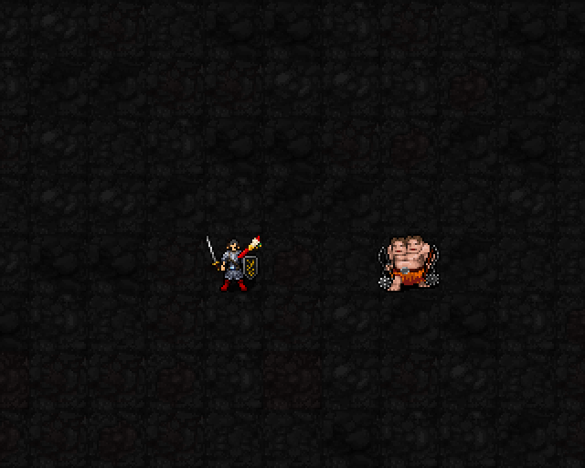

회화·조각·공예를 동시에 전시하고, 세 가지 3성 권능을 강화합니다.
해금: 신앙★★★★★120 · 최소 기도술 제한 없음
비용: MP6·신앙12·행동1턴
시전 완료 후 6+0.2I턴 → 기도술12에서8.4턴. 종료 후 재사용 대기15턴.

기존 5성 시전 연출을 최신 게임에서 다시 캡처한 초안입니다. 가운데 큰 금빛·다색 고리는 시전 효과, 이후 플레이어 칸에 남는 문양은 특별전 유지 표시입니다. 유지·종료 장면 사이의 실제 대기 시간은 GIF에서 줄였습니다.
해당 작품의 3성 권능을 사용하면 그 작품의 가호는 기존 회복 시간 동안 쉽니다. 특별전 중에는 1성 전시 전환이 잠기며, 특별전 종료 후 원래 선택한 전시로 돌아갑니다.
특별전: 신앙120 해금 · 최소 기도술 없음 · MP6·신앙12·1턴.
시전 완료 후 6+0.2I턴 → I12에서8.4턴. 종료 후 재사용 대기15턴.
특별전 중 세 전시의 가호를 함께 받고, 전시 선택과 관계없이 세 가지 3성 권능을 사용합니다. 각각 MP3·신앙3·1턴은 별도 지불합니다. 특별전 발동만으로 폭발·파동·보호막이 자동 발생하지는 않습니다.
| 권능 | 5성 강화식 | I=12 예시 |
|---|---|---|
| 회화 | 3d(8+⌊I/2⌋)+6×채색 수 범위 주변2칸 · 자폭 위험 유지 | 3중첩 3d14+18 21~60 · 평균40.5 |
| 조각 | 4d(6+⌊I/3⌋)+⌊I/2⌋ 폭3줄·길이3칸, 밀치기2칸 | 4d10+6 10~46 · 평균28 |
| 공예 | 보호량22+⌊3I/2⌋ 시전 완료 후8+⌊I/6⌋턴 | 40 흡수 · 10턴 |
회화·조각 피해는 AC 적용 전. 공예의 독 시간 감소·혼란/감속/공포 시간 절반 효과 유지. 강화 공예의 남은 보호막 시간은 특별전 종료와 별개입니다.
현재5성 외형 검토 중. 1·3성 확정, 전투 수치는 raden-balance01 유지.